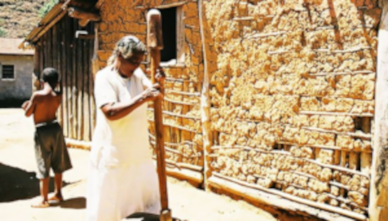

"Estudo cruza mapas do século XIX com geolocalização e acha terrenos quilombolas escondidos em inventários falsos. STF já usa dados em ações de reparação!"
04/05/25
 MPF Processa VALE, UNIÃO E Estado Do Pará por contaminação Indigena, FURR entra com laudo tecnico revolucinarioPesquisadores da Fundação Universitária Rosely Roth comprovam: metais pesados da mina Onça Puma atingiram níveis 14x acima do seguro em rios e corpos dos Xikrin. Estudo será prova crucial no processo milionário.
02/05/25
01/05/25
Documentos revelam redes clandestinas de afeto e resistência nos anos de chumbo
28/04/25